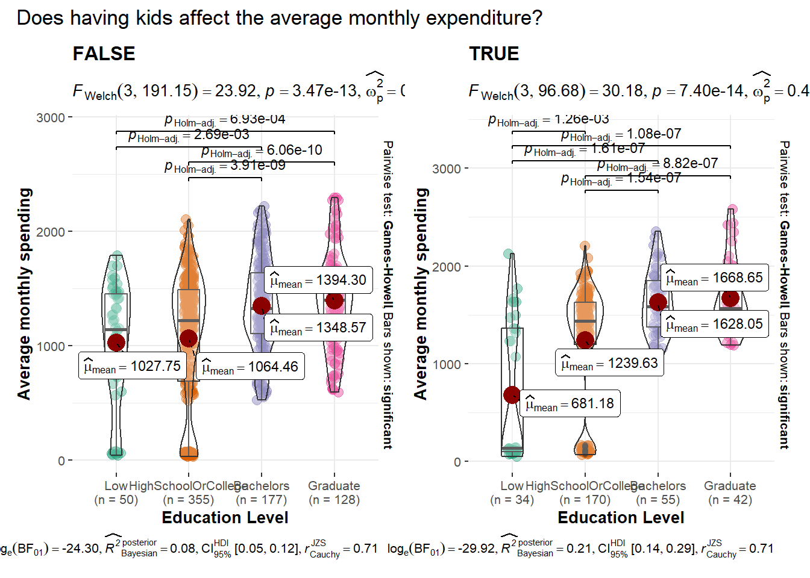
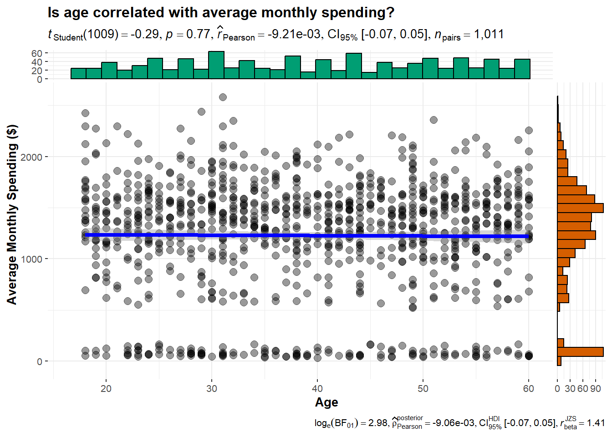

Click to show/hide the code
pacman::p_load(ggiraph, plotly, patchwork, DT, tidyverse, skimr, knitr, ggstatsplot, ggridges, ggmosaic)The objective of this exercise is to reveal the demographic and financial characteristics of the city of Engagement, using appropriate static and interactive statistical graphics methods.
This exercise requires a user-friendly and interactive solution that helps city managers and planners to explore the complex data in an engaging way and reveal hidden patterns.
There are two data sets used in this study, namely Participants.csv and FinancialJournal.csv.
Participants.csv consists of 1011 rows and 7 columns, and contains demographic information about the residents of the city of Engagement, as seen in the following table.
| S/N | Columns | Description |
|---|---|---|
| 1 | participantID | The unique ID that is assigned to each participant. |
| 2 | householdSize | The number of people living in the participant’s household. |
| 3 | haveKids | Whether there are any children living in the participant’s household. |
| 4 | age | The age of the participant at the start of the study. |
| 5 | educationLevel | The education level of the participant. |
| 6 | interestGroup | The participant’s primary interest group, represented by the letters A-J. |
| 7 | joviality | The participant’s overall happiness level at the start of the study ranging from 0-1. |
FinancialJournal.csv has 1,513,636 rows and 4 columns, and consists of information pertaining to the participant’s financial transactions, as seen in the following table.
| S/N | Columns | Description |
|---|---|---|
| 1 | participantID | The financial transaction of the participant with the specified ID. |
| 2 | timestamp | The date and time in which the transaction was logged. |
| 3 | category | The category of the expense. |
| 4 | amount | The financial transaction amount. |
In this exercise, the following R packages will be used:
tidyverse: for data cleaning and manipulation.
ggiraph: for making ggplot2 graphics interactive.
plotly: for plotting interactive statistical charts.
patchwork:
knitr: for generating a simple table using the kable() function
The code chunk below uses p_load() of the pacman package to check if all the packages are installed. If they are, they will then be loaded into the R environment.
pacman::p_load(ggiraph, plotly, patchwork, DT, tidyverse, skimr, knitr, ggstatsplot, ggridges, ggmosaic)To import the data “Participants.csv” and “FinancialJournal.csv” into the R environment, read_csv() of the readr package is used, as seen in the code chunks below.
participants <- read_csv("data/Participants.csv")fin_journal <- read_csv("data/FinancialJournal.csv")We will examine both data sets using the glimpse() function of the dplyr package. Firstly, the participants data set is examined.
glimpse(participants)Rows: 1,011
Columns: 7
$ participantId <dbl> 0, 1, 2, 3, 4, 5, 6, 7, 8, 9, 10, 11, 12, 13, 14, 15, 1…
$ householdSize <dbl> 3, 3, 3, 3, 3, 3, 3, 3, 3, 3, 3, 3, 3, 3, 3, 3, 3, 3, 3…
$ haveKids <lgl> TRUE, TRUE, TRUE, TRUE, TRUE, TRUE, TRUE, TRUE, TRUE, T…
$ age <dbl> 36, 25, 35, 21, 43, 32, 26, 27, 20, 35, 48, 27, 34, 18,…
$ educationLevel <chr> "HighSchoolOrCollege", "HighSchoolOrCollege", "HighScho…
$ interestGroup <chr> "H", "B", "A", "I", "H", "D", "I", "A", "G", "D", "D", …
$ joviality <dbl> 0.001626703, 0.328086500, 0.393469590, 0.138063446, 0.8…Issues:
The variables participantID, householdSize and age are currently formatted as <dbl>. These variables will have to be converted into <int> format.
Likewise, the variable educationLevel will need to be converted from <chr> to <fct> format. The educationLevel will then be sorted from the lowest level (Low) to the highest level (Graduate).
The aforementioned variables are reformatted into the correct type, as seen in the code chunk below.
participants <- participants %>%
# convert 'participantId', 'householdSize' and 'age' into <int>
mutate_at(vars('participantId', 'householdSize', 'age'), as.integer) %>%
# convert 'educationLevel' to <fct>
mutate_at(vars('educationLevel'), as.factor) %>%
# sort 'educationLevel' in order
mutate(educationLevel = factor(educationLevel, levels = c("Low", "HighSchoolOrCollege", "Bachelors", "Graduate")))
glimpse(participants)Rows: 1,011
Columns: 7
$ participantId <int> 0, 1, 2, 3, 4, 5, 6, 7, 8, 9, 10, 11, 12, 13, 14, 15, 1…
$ householdSize <int> 3, 3, 3, 3, 3, 3, 3, 3, 3, 3, 3, 3, 3, 3, 3, 3, 3, 3, 3…
$ haveKids <lgl> TRUE, TRUE, TRUE, TRUE, TRUE, TRUE, TRUE, TRUE, TRUE, T…
$ age <int> 36, 25, 35, 21, 43, 32, 26, 27, 20, 35, 48, 27, 34, 18,…
$ educationLevel <fct> HighSchoolOrCollege, HighSchoolOrCollege, HighSchoolOrC…
$ interestGroup <chr> "H", "B", "A", "I", "H", "D", "I", "A", "G", "D", "D", …
$ joviality <dbl> 0.001626703, 0.328086500, 0.393469590, 0.138063446, 0.8…Next, we will examine the fin_journal data set.
glimpse(fin_journal)Rows: 1,513,636
Columns: 4
$ participantId <dbl> 0, 0, 0, 1, 1, 1, 2, 2, 2, 3, 3, 3, 4, 4, 4, 5, 5, 5, 6,…
$ timestamp <dttm> 2022-03-01, 2022-03-01, 2022-03-01, 2022-03-01, 2022-03…
$ category <chr> "Wage", "Shelter", "Education", "Wage", "Shelter", "Educ…
$ amount <dbl> 2472.50756, -554.98862, -38.00538, 2046.56221, -554.9886…Issues:
The timestamp variable is in “YYYY-MM-DD HH:MM:SS” format. A new variable yearmon in “YYYY-MM” format will be created to facilitate in data analysis later on.
The variable participantID will need to be reformatted from <dbl> to <int>.
The aforementioned issues are addressed in the code chunk below.
fin_journal <- fin_journal %>%
# convert 'participantId' to <int>
mutate_at(vars('participantId'), as.integer) %>%
# create a new 'yearmon' column
mutate(yearmon = format(as.Date(timestamp), '%Y-%m'))
glimpse(fin_journal)Rows: 1,513,636
Columns: 5
$ participantId <int> 0, 0, 0, 1, 1, 1, 2, 2, 2, 3, 3, 3, 4, 4, 4, 5, 5, 5, 6,…
$ timestamp <dttm> 2022-03-01, 2022-03-01, 2022-03-01, 2022-03-01, 2022-03…
$ category <chr> "Wage", "Shelter", "Education", "Wage", "Shelter", "Educ…
$ amount <dbl> 2472.50756, -554.98862, -38.00538, 2046.56221, -554.9886…
$ yearmon <chr> "2022-03", "2022-03", "2022-03", "2022-03", "2022-03", "…is.na() function is used to check for any missing values in both data sets. As seen from the results below, there are no missing values present.
sapply(participants, function(x) sum(is.na(x))) participantId householdSize haveKids age educationLevel
0 0 0 0 0
interestGroup joviality
0 0 sapply(fin_journal, function(x) sum(is.na(x)))participantId timestamp category amount yearmon
0 0 0 0 0 We can use the unique() function to retain rows that are distinct (i.e remove all duplicate rows).
As seen in the table below, there are now 1,512,523 rows in the data set fin_journal, meaning 1,113 duplicate rows were removed from the data set.
fin_journal <- unique(fin_journal)
fin_journal# A tibble: 1,512,523 × 5
participantId timestamp category amount yearmon
<int> <dttm> <chr> <dbl> <chr>
1 0 2022-03-01 00:00:00 Wage 2473. 2022-03
2 0 2022-03-01 00:00:00 Shelter -555. 2022-03
3 0 2022-03-01 00:00:00 Education -38.0 2022-03
4 1 2022-03-01 00:00:00 Wage 2047. 2022-03
5 1 2022-03-01 00:00:00 Shelter -555. 2022-03
6 1 2022-03-01 00:00:00 Education -38.0 2022-03
7 2 2022-03-01 00:00:00 Wage 2437. 2022-03
8 2 2022-03-01 00:00:00 Shelter -557. 2022-03
9 2 2022-03-01 00:00:00 Education -12.8 2022-03
10 3 2022-03-01 00:00:00 Wage 2367. 2022-03
# ℹ 1,512,513 more rowsThe same check is done on participants, and as seen from the table below, there are no duplicate rows to be removed.
unique(participants)# A tibble: 1,011 × 7
participantId householdSize haveKids age educationLevel interestGroup
<int> <int> <lgl> <int> <fct> <chr>
1 0 3 TRUE 36 HighSchoolOrCollege H
2 1 3 TRUE 25 HighSchoolOrCollege B
3 2 3 TRUE 35 HighSchoolOrCollege A
4 3 3 TRUE 21 HighSchoolOrCollege I
5 4 3 TRUE 43 Bachelors H
6 5 3 TRUE 32 HighSchoolOrCollege D
7 6 3 TRUE 26 HighSchoolOrCollege I
8 7 3 TRUE 27 Bachelors A
9 8 3 TRUE 20 Bachelors G
10 9 3 TRUE 35 Bachelors D
# ℹ 1,001 more rows
# ℹ 1 more variable: joviality <dbl>To facilitate data visualization, all values will be transformed into their absolute values and rounded to two decimal places, keeping in line with the format for currency.
# convert all values *amount* to absolute values
fin_journal$amount <- abs(fin_journal$amount)
# round all values to 2 decimal places
fin_journal$amount <- round(fin_journal$amount, digits = 2)Since there are several transactions of the same category for each participant within a given month, we will employ the group_by() and summarise() functions to combine all transactions of the same category by adding them up.
fin_journal <- fin_journal %>%
group_by(participantId, yearmon, category) %>%
summarise(amount = sum(amount))The pivot_wider() function is used to generate separate columns for each transaction category.
In addition, any missing ‘NaN’ values are substituted with 0 to indicate that the participant had no transactions of that specific category in that particular month and year.
fin_journal <- fin_journal %>%
# pivoting the category column
pivot_wider(names_from = category,
values_from = amount) %>%
# fill missing values with 0
mutate_all(~replace(., is.na(.), 0))fin_journal <- fin_journal %>%
# create new column for total expenses
mutate(total_expenses = sum(Education, Food, Recreation, Shelter)) %>%
# create new column for total earnings
mutate(total_earnings = sum(Wage, RentAdjustment)) %>%
# create new column for total earnings
mutate(total_savings = (total_earnings - total_expenses))Using the kable() function of the knitr package, the final cleaned data sets are displayed as follows:
kable(head(participants), align = "c")| participantId | householdSize | haveKids | age | educationLevel | interestGroup | joviality |
|---|---|---|---|---|---|---|
| 0 | 3 | TRUE | 36 | HighSchoolOrCollege | H | 0.0016267 |
| 1 | 3 | TRUE | 25 | HighSchoolOrCollege | B | 0.3280865 |
| 2 | 3 | TRUE | 35 | HighSchoolOrCollege | A | 0.3934696 |
| 3 | 3 | TRUE | 21 | HighSchoolOrCollege | I | 0.1380634 |
| 4 | 3 | TRUE | 43 | Bachelors | H | 0.8573967 |
| 5 | 3 | TRUE | 32 | HighSchoolOrCollege | D | 0.7729578 |
kable(head(fin_journal), align = "c")| participantId | yearmon | Education | Food | Recreation | Shelter | Wage | RentAdjustment | total_expenses | total_earnings | total_savings |
|---|---|---|---|---|---|---|---|---|---|---|
| 0 | 2022-03 | 38.01 | 268.26 | 348.68 | 554.99 | 11931.95 | 0 | 1209.94 | 11931.95 | 10722.01 |
| 0 | 2022-04 | 38.01 | 265.79 | 219.42 | 554.99 | 8636.88 | 0 | 1078.21 | 8636.88 | 7558.67 |
| 0 | 2022-05 | 38.01 | 264.54 | 382.99 | 554.99 | 9048.16 | 0 | 1240.53 | 9048.16 | 7807.63 |
| 0 | 2022-06 | 38.01 | 256.90 | 465.67 | 554.99 | 9048.16 | 0 | 1315.57 | 9048.16 | 7732.59 |
| 0 | 2022-07 | 38.01 | 270.13 | 1069.48 | 554.99 | 8636.88 | 0 | 1932.61 | 8636.88 | 6704.27 |
| 0 | 2022-08 | 38.01 | 261.76 | 314.13 | 554.99 | 9459.44 | 0 | 1168.89 | 9459.44 | 8290.55 |
age <- plot_ly(
participants,
x = ~age,
type = "histogram",
nbinsx = 10,
marker = list(color = 'rgb(158,202,225)',
line = list(color = 'rgb(8,48,107)',
width = 1.5))) %>%
layout(title = "Distribution of participants' age",
xaxis = list(title = "Age",
zeroline = FALSE,
range = c(15, 65)),
yaxis = list(title = "Count"))
ageInsights:
There is a relatively even distribution of participants’ ages between 20-59 years old, with the smallest number of participants being those who are 60 years old and above (23 participants) and those aged 15-19 (48 participants). The age group with the highest number of participants is the 30-34 age range, which has 130 participants.
The code
ggplot(participants,
aes(x = age,
y = interestGroup)) +
geom_density_ridges(
scale = 3,
rel_min_height = 0.01,
bandwidth = 3.4,
fill = alpha("#7097BB", 0.5),
color = "white") +
scale_x_continuous(
name = "Age",
expand = c(0, 0)) +
scale_y_discrete(name = NULL, expand = expansion(add = c(0.2, 2.6))) +
theme_ridges()The plot
The code
ggplot(participants,
aes(x = age,
y = educationLevel)) +
geom_density_ridges(
scale = 3,
rel_min_height = 0.01,
bandwidth = 3.4,
fill = alpha("#800020", 0.5),
color = "white") +
scale_x_continuous(
name = "Age",
expand = c(0, 0)) +
scale_y_discrete(name = NULL, expand = expansion(add = c(0.2, 2.6))) +
theme_ridges()The plot

fig <- plot_ly()
fig <- fig %>%
add_pie(data = count(participants, educationLevel),
labels = ~educationLevel,
values = ~n,
name = "Education level",
title = "Education Level",
domain = list(row = 0, column = 0))
fig <- fig %>%
add_pie(data = count(participants, householdSize),
labels = ~householdSize,
values = ~n,
name = "Household size",
title = "Household size",
domain = list(row = 0, column = 1))
fig <- fig %>%
add_pie(data = count(participants, haveKids),
labels = ~haveKids,
values = ~n,
name = "Have Kids",
title = "Have kids",
domain = list(row = 0, column = 2))
fig <- fig %>% layout(title = "Proportion of participants", showlegend = F,
grid = list(rows=1, columns=3),
xaxis = list(showgrid = FALSE, zeroline = FALSE, showticklabels = FALSE),
yaxis = list(showgrid = FALSE, zeroline = FALSE, showticklabels = FALSE))
figInsights:
Most participants in the city of Engagement are highly educated, with only 8.31% of the participants surveyed having a low level of education.
Household sizes of the participants are relatively small, with more than 2/3 of the participants’ household sizes being 2 or less.
This could be attributed to the fact that more than 2/3 of households (70.2%) do not have children.
These insights lead us to the next question: does having a high level of education result in fewer participants having children? We will explore more about this later on in section 4.2.1.
fin_long <- fin_journal %>%
pivot_longer(cols = Education:Shelter, names_to = "Category", values_to = "Amount")
total_spent <- fin_long %>%
group_by(Category) %>%
summarize(Total = sum(Amount))
total_fig <- plot_ly(
total_spent,
x = ~Category,
y = ~Total,
color = ~Category,
type = "bar",
textposition = "none",
hoverinfo = "text",
text = ~paste(total_spent$Total, " (", scales::percent(total_spent$Total/sum(total_spent$Total)), ")"),
showlegend = FALSE) %>%
layout(title = "What do the participants spend the most on?",
xaxis = list(title = list(text = "Category")),
yaxis = list(title = list(text = "Total Amount Spent")))
total_figInsights:
Most of the participants’ expenditure is due to Shelter, which accounts for 45.9% of the total spending.
The category that participants spent the least on is Education, accounting for only 0.9% of the total spending.
int_edu <- ggplot(data = participants) +
geom_mosaic(aes(x = product(educationLevel), fill = interestGroup)) +
labs(x = "Education Level", y = "Interest Group", title = "Education levels and their interest groups") +
theme(legend.position = "none")
ggplotly(int_edu)In order to find out if there really is an association between education level and having kids, the following hypotheses will be tested at 95% confidence level:
H0: There is no significant association between education level and having kids.
H1: The association between education level and having kids is statistically significant.
set.seed(123)
# creating a plot
have_kids <- ggbarstats(
participants,
x = haveKids,
y = educationLevel,
xlab = "Education level",
ylab = "Percentage",
type = "np",
title = "Is there an association between education level and having kids?")
# looking at the plot
have_kids
Based on the Pearson’s chi-square test results, the p-value of 5.91e-03 is lower than the alpha value of 0.05. Thus, there is sufficient evidence to reject the null hypothesis and conclude that there is a statistically significant association between education level and households with kids.
Visually as seen from the graph, we can observe that as education levels increase, the proportion of participants’ households with kids decreases.
Are people with higher education levels happier, or is there no difference in joviality regardless of education level? To find out, a one-way ANOVA test is done on the following hypotheses at a confidence level of 95%:
H0: There is no difference among group means.
H1: There is a difference among group means.
edu_jov <- ggbetweenstats(
data = participants,
x = educationLevel,
y = joviality,
type = "p",
mean.ci = TRUE,
pairwise.comparisons = TRUE,
pairwise.display = "s",
p.adjust.method = "fdr",
messages = FALSE,
xlab = "Education level",
ylab = "Joviality",
title = "Does education level affect joviality?")
edu_jovAs the p-value of 0.70 is higher than the alpha value of 0.05, we accept the null hypothesis as there is sufficient evidence to conclude that the means among the different education levels are the same. Therefore, education level does not really affect joviality.
Similarly, we can perform a oneway ANOVA test at 95% confidence level to determine if there is a difference in the mean of joviality value among the different interest groups.
H0: There is no difference among group means.
H1: There is a difference among group means.
int_jov <- ggbetweenstats(
data = participants,
x = interestGroup,
y = joviality,
type = "p",
mean.ci = TRUE,
pairwise.comparisons = TRUE,
pairwise.display = "s",
p.adjust.method = "fdr",
messages = FALSE,
package = "yarrr",
palette = "info2",
xlab = "Interest group",
ylab = "Joviality",
title = "Does interest group affect joviality?")
int_jovVisually, participants in interest groups C, E and G have the higheest mean joviality values, while participants in interest group H have the lowest mean joviality values.
However, with the p-value of 0.77 being higher than the alpha value of 0.05, the null hypothesis has to be rejected. There is statistically significant evidence that there is no difference in the means among the interest groups. Thus, being in certain interest groups does not affect joviality either.
age_jov <- ggscatterstats(
data = participants,
x = age,
y = joviality,
xlab = "Age",
ylab = "Joviality",
title = "Is age correlated with joviality?")
age_jov
As seen from the scatter plot, there is a very weak negative correlation between joviality and age.
kids_jov <- ggbetweenstats(
data = participants,
x = haveKids,
y = joviality,
type = "p",
mean.ci = TRUE,
pairwise.comparisons = TRUE,
pairwise.display = "s",
p.adjust.method = "fdr",
messages = FALSE,
xlab = "Have Kids",
ylab = "Joviality",
title = "Does having kids affect joviality?")
kids_jov
total <- fin_journal %>%
group_by(participantId) %>%
summarise(total_exp = sum(total_expenses), total_earn = sum(total_earnings), total_save = sum(total_savings))
joined <- merge(participants, total, by = "participantId")
spend_jov <- ggscatterstats(
data = joined,
x = total_exp,
y = joviality,
xlab = "Total spendings",
ylab = "Joviality",
title = "Is amount spent correlated with joviality?")
spend_jov
#Do a boxplot here to see spendingInterest group by age
interest group by education level
explore grouped ggstats
does having kids result in greater spending and lower savings? <- CDA
is education level associated with spending, saving? like smarter ppl save more? or stupid people spend more?
stop talking about joviality alr. not demographic or financial